Chapter 5 Using GeoJSON in Leaflet
5.1 Creating a .geojson file
So far, we have created a leaflet map, added some aesthetics such as markers, and even embedded a map into a dummy website. Alright, the website wasn’t even close to good, but the methodology should be the same when working with other fully functional and better looking websites. That may be enough to give you confidence to start as a webmapper, but not so fast! There is always, and will be some more things to learn and in this case I would like to introduce another format of storing geospatial information. The use of .geojson files.
5.2 What are .geojson files?
.geojson files, according to the GIS leader ESRI, are an open standard geospatial data interchange format that represents simple geographic features and their nonspatial attributes. GeoJSON is based on the JavaScript Object Notation (JSON) file format which is a lightweight data exchange format that is easily interpretable by both man and machine. In very few instances can any format please both sides of the divide but JSON does, and this site provides examples. Anyway, just like you can tell from the name, it is also based from the JavaScript programming language. If you have worked with JavaScript before, it looks very much like a data format based on dictionaries. In essence, JSON is a large dictionary holding other dictionaries of data within it. A GeoJSON is a JSON file that follows a certain structure and has spatial index and geometry specifications in it. See this website for a geojson example.
An example of a GeoJSON file format structure is shown below:
{
"type": "FeatureCollection",
"features": [
{
"type": "Feature",
"properties": {
"City": "Nairobi",
"Population": "4, 300, 000"
},
"geometry": {
"coordinates": [
36.80617598261199,
-1.2868825246637812
],
"type": "Point"
}
},
{
"type": "Feature",
"properties": {
"City": "Kisumu",
"Population": "610, 082"
},
"geometry": {
"coordinates": [
34.738718987625106,
-0.10390483386935045
],
"type": "Point"
}
},
---snip----Below is an example of a json file structure.
{
"Influencers" : [
{
"name" : "Jaxon",
"age" : 42,
"Works At" : "Tech News"
}
{
"name" : "Miller",
"age" : 35
"Works At" : "IT Day"
}
]
}5.3 Why geojson?
Yours truly could be wrong, but one advantage of geojson and json is that it’s minimal on size (sometimes) and is more portable than shapefiles. Shapefiles are dependent on other data formats that accompany it, such as .shx, .dbf, .prj and others that provide geospatial orientation, metadata, attributes and others. GeoJSON and JSON formats will come as standalone and holding the same amount of data.
So when do I use shapefiles vis a vis GeoJson? If you want to work with geospatial data in a web interface, geojson is the way to go. Period.
5.4 Creating a geojson file
“Creating a geojson file with several dictionaries in it looks very intimidating. No hope of creating one without errors.” You may think to yourself. Precisely, but luckily, we have the geojson.io website that does the heavylifting for us. We shall head over to it and create a geojson file of some cities and their population.
First, of all, the website looks like this, a cool global map powered by Mapbox.
knitr::include_graphics(rep("D:/gachuhi/my-leaflet/images/mapbox-front.jpg"))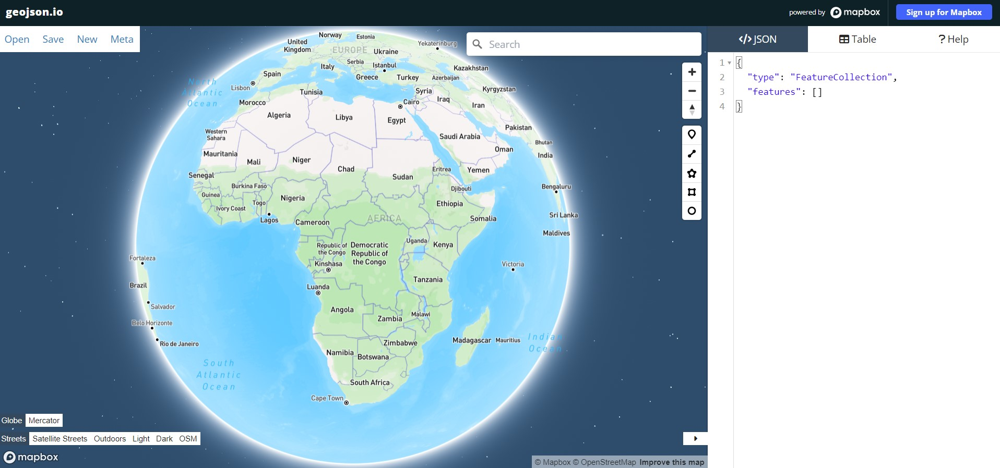
On your right, under the </>JSON tab, the Mapbox folks have already given you a headstart by indicating what feature type and features will go into your geojson file. These are important as any website uses these keywords when parsing information from the GeoJSON file. Zoom to Kenya and click a point on top of the Nairobi dot pin, like shown below. Use the highlighted pin in the image below to create a marker over Nairobi.
knitr::include_graphics(rep("D:/gachuhi/my-leaflet/images/nairobi-pin.jpg"))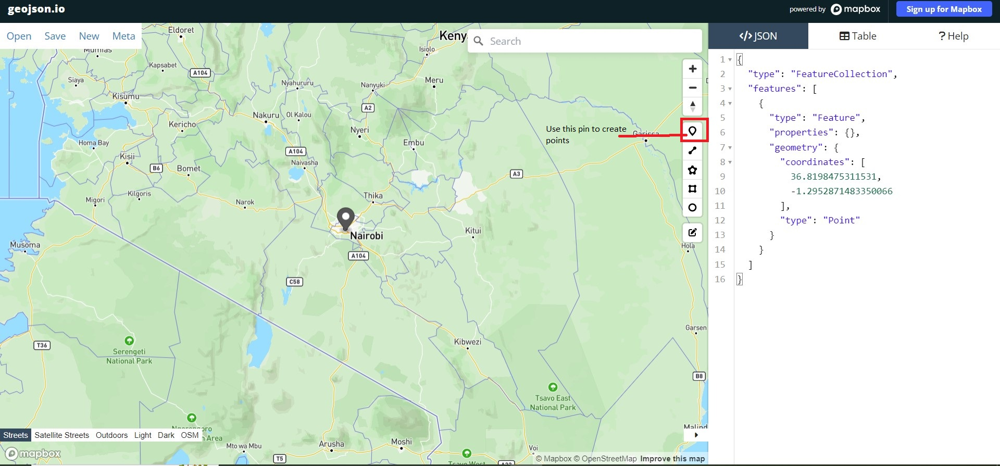
By doing so, you will realize that a new dictionary of type, properties and geometry appears within the features list. These new keys provide the additional spatial and geometry data in their values in which a website when parsing this information can place them at their appropriate earth locations.
Now move over to the Table tab and click new column as shown below.
knitr::include_graphics(rep("D:/gachuhi/my-leaflet/images/table.jpg"))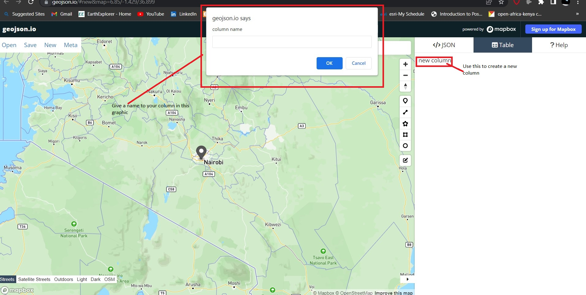
Click on it and in the graphic that appears, give your column the name City. Click Ok and in the table cell that appears, type Nairobi.
knitr::include_graphics(rep("D:/gachuhi/my-leaflet/images/nairobi-named.jpg"))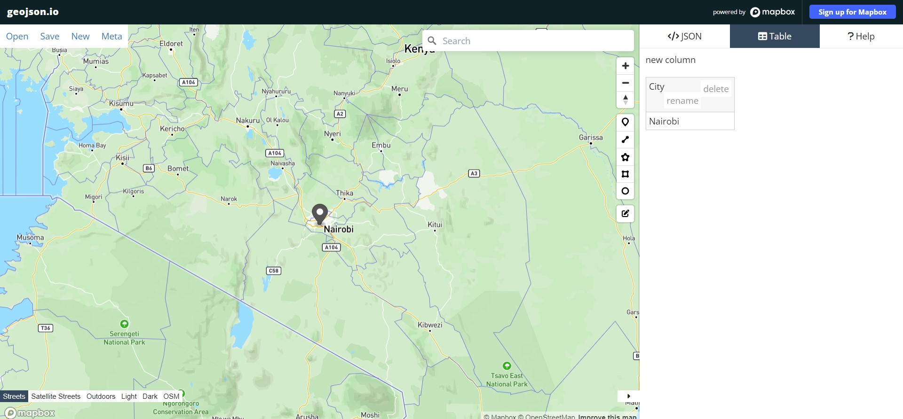
Now create a new pin over Kisumu and a new dictionary will appear below that of Nairobi and a new table row will appear in the Table tab. Do the rest for the following cities: Mombasa, Nakuru, Nyeri, Machakos and Malindi. Legally speaking, only the first four are cities by law, the rest are just towns but for the sake of this tutorial, let’s corporately refer to them as cities.
knitr::include_graphics(rep("D:/gachuhi/my-leaflet/images/cities-named.jpg"))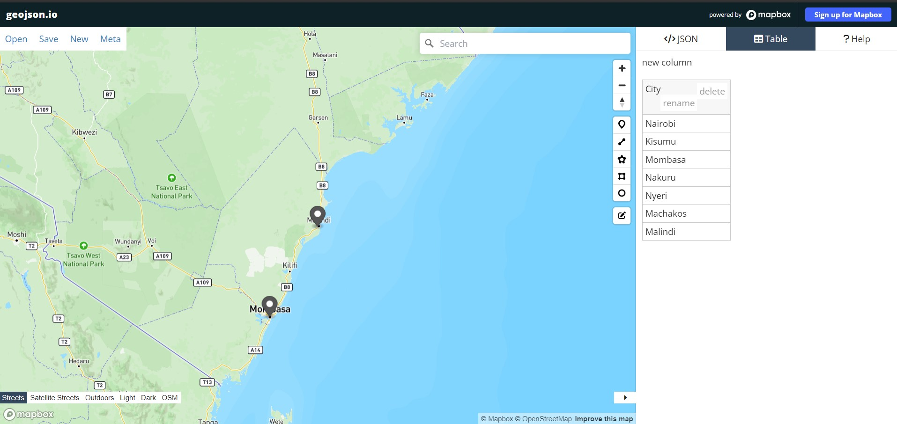
Alright, one process down, one more to go. We will fill these cities with their population statistics. Create a new column with the heading “Population”. Fill each of the cities with the following statistics.
read.csv("D:/gachuhi/my-leaflet-vs/data/points.csv")[ , 1:2]## City Population
## 1 Nairobi 4, 300, 000
## 2 Kisumu 610, 082
## 3 Mombasa 1, 440, 000
## 4 Nakuru 422, 000
## 5 Nyeri 759, 164
## 6 Machakos 1, 422, 000
## 7 Malindi 119, 859Once done, head over to the top left of the geojson.io website, and click Save. A list of options will appear, click on save as geojson. It should appear somewhere in your Downloads directory.
knitr::include_graphics(rep("D:/gachuhi/my-leaflet/images/geojson-save.jpg"))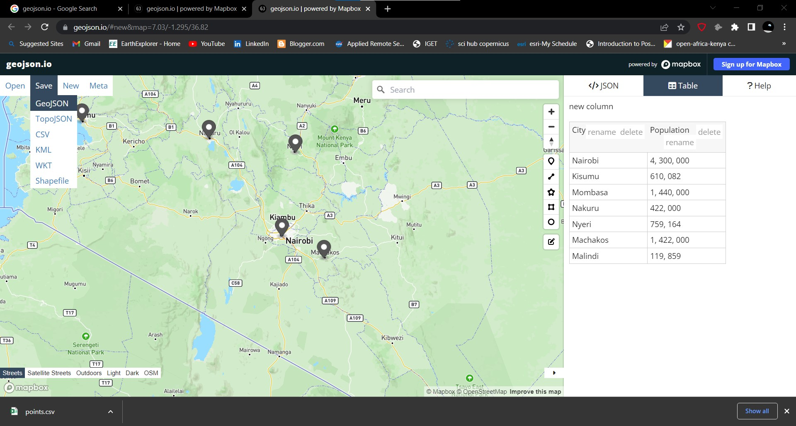
5.5 Saving the Geojson to Github
Now, based on experience, using a local Geojson file (one within your computer directory) is painful in JavaScript. The error I faced had to do with servers or something. To get a way around this and still be able to display .geojson data in Leaflet, the data had to be stored on an online server, in this case Github. We would love to show you how to save data on Github, but this would make this chapter long. Therefore, and with sincere apologies, it would be best if you googled it out.
However, on the bright side, we have provided the GeoJSON we will use accessible from this link.
5.6 Loading the GeoJSON into Leaflet
As they always say, there are many ways of killing a rat. There are around three ways in which to load GeoJson data into leaflet, at least from our discovery. We shall start with the easiest and most unreliable to what we consider the best. Let start with the easy one, loading a .geojson file from within our Javascript file itself.
5.6.1 The easy way
First of all create a blank JavaScript file called geojson.js. Thereafter, go to your map.html file which you had created last in Chapter 2 Open it. Change the value in the src attribute within the <script> tag of the <body>–the one inside the <div> element with id="myMap" to read "geojson.io" like below.
<!DOCTYPE html>
<html lang="en">
<head>
-- snip ---
</head>
<body>
<div id="myMap">
<script src="geojson.js">
</script>
</div>
</body>
</html>
Alright. Head over to your geojson.js and as always, add the leaflet classes L.map and L.tileLayer. We set the view of our new Leaflet map to that of Nairobi. Your blank geojson.js should now be filled with the below code.
var map = L.map('myMap').setView([-1.295287148, 36.81984753], 7);
L.tileLayer('https://tile.openstreetmap.org/{z}/{x}/{y}.png', {
maxZoom: 19,
attribution: '© <a href="http://www.openstreetmap.org/copyright">OpenStreetMap</a>'
}).addTo(map);Okay. Head over to geojson.io website and right under the </>JSON you will see a copy icon.
knitr::include_graphics(rep("D:/gachuhi/my-leaflet/images/geojson-copy.jpg"))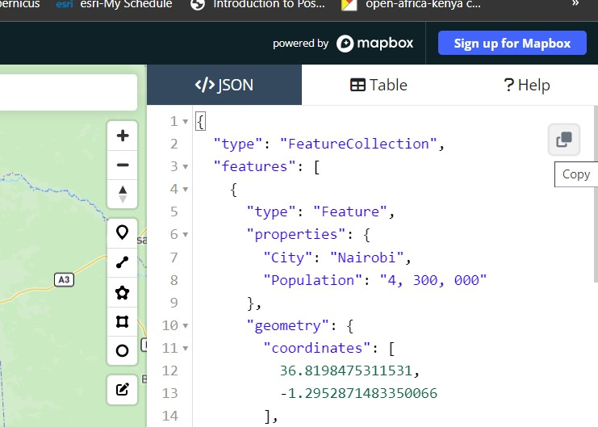
Click it and past it in your geojson.js file right above the other L.map and L.tileLayer classes. Your geojson.js should look like below.
var cities = {
"type": "FeatureCollection",
"features": [
{
"type": "Feature",
"properties": {
"City": "Nairobi",
"Population": "4, 300, 000"
},
"geometry": {
"coordinates": [
36.8198475311531,
-1.2952871483350066
],
"type": "Point"
}
},
-- snip ---
{
"type": "Feature",
"properties": {
"City": "Malindi",
"Population": "119, 859"
},
"geometry": {
"coordinates": [
40.10521499751357,
-3.2138767356491655
],
"type": "Point"
}
}
]
}
var map = L.map('myMap').setView([-1.295287148, 36.81984753], 7);
L.tileLayer('https://tile.openstreetmap.org/{z}/{x}/{y}.png', {
maxZoom: 19,
attribution: '© <a href="http://www.openstreetmap.org/copyright">OpenStreetMap</a>'
}).addTo(map);
Refresh your map.html. It’s a map of Kenya alright, but none of our .geojson features appear yet. We are about to change that. Leaflet offers the L.geoJSON class to add GeoJSON data to a map. The class speaks for itself therefore, let’s use it to add our GeoJSON features. Add the following code below the other leaflet map class layers.
L.geoJSON(cities).addTo(map);Refresh your map.html. The GeoJSON features should now appear at their exact locations.
knitr::include_graphics(rep("D:/gachuhi/my-leaflet/images/geojson-leaflet.jpg"))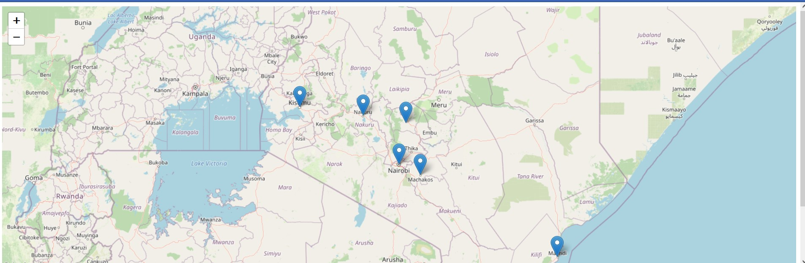
How about if we made the markers more interactive, say they display popups as we did in Chapter 3? We want the city names to appear when the user clicks on the markers. Easy. Just create a function that does so as in the logic provided here. We customized it to our case to make sure it references to the City key which is part of the dictionary attached to the properties key.
L.geoJSON(cities).bindPopup(function (layer) {
return layer.feature.properties.City;
}).addTo(map);
knitr::include_graphics(rep("D:/gachuhi/my-leaflet/images/geojson-names.jpg"))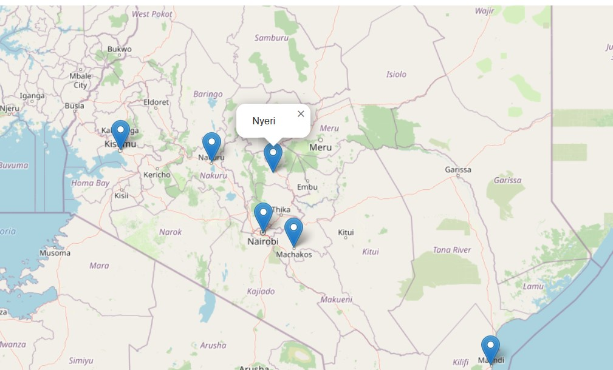
There is one issue with this method. If we have a very long GeoJSON data structure, it will clatter our JavaScript file. We only worked with seven cities, but it is very common to work with data holding hundreds and even thousands of dictionaries. That would make your JavaScript file stretch to ad infitum.
This brings us to the other two methods, that of using the Ajax plugin and using the Fetch Application Programming Interface (API). Don’t let the words scare you. Take a break, grab a glass of water and come back.
5.6.2 Using the Ajax Plugin
As the term ‘plugin’ suggests, this is an extension that offers additional functions to the core Leaflet plugin. The Ajax plugin is available from this link. Download it to your directory preferably within the same directory as your map.html and geojson.js. Alright. Right under the src for leaflet.js in your map.html. Add the following <script> tag.
<head>
-- snip --
<script src="leaflet-ajax-gh-pages\dist\leaflet.ajax.js"></script>
</head>
-- snip --This file will allow you to add .geojson files to your Leaflet map. However, there is a catch, both the Ajax and Fetch APIs only work with GeoJson file formats saved on a web server. Based on experience, they will not work with local GeoJson files. As a work around, we saved our GeoJSON file to Github. Don’t worry, here is the link to the raw .geojson file we had created earlier.
We shall call our GeoJSON file from Github using Ajax as shown in the code below. Please remember to comment out your var cities and L.geoJSON using \\ because they are irrelevant in this particular case. You actually should.
var geojsonLayer = new L.geoJson.ajax("https://raw.githubusercontent.com/sammigachuhi/geojson_files/main/cities-geojson.geojson").addTo(map);Your map should now show the markers of our cities. If you are hawk eyed, you may have noticed that the syntax is a bit different, both from the Ajax Website and that of the L.geoJSON from Leaflet. Starting with the latter, we have instead used L.geoJson and unlike in the creators website where he used var geojsonLayer = new L.GeoJSON.AJAX(<your-geojson-file>) we used the following syntax: L.geoJson.ajax() (ajax and geoJson begin with small case). Actually, that’s what worked after a lengthy web search.
Just like using L.geoJSON, we can also add popups after calling the .ajax method.
var geojsonLayer = new L.geoJson.ajax("https://raw.githubusercontent.com/sammigachuhi/geojson_files/main/cities-geojson.geojson")
.bindPopup(function (layer) {
return layer.feature.properties.City;
}).addTo(map);Doing so should make the city names appear on click on your leaflet map.
5.6.3 Using Fetch API
Fetch API is a modern interface that allows you to make HTTP requests to servers from web browsers. In other words, it searches for a resource over the web and retrieves it, thus giving it back to you. Think of it as a dog in which you throw a saucer and tell your faithful hound “Sabre, fetch!”. The dog runs after the saucer, grips it with its canines before it touches ground and quickly brings it back to you. Same case with Fetch API!
We had mentioned we will show how to retreive our Github stored GeoJSON data and we shall stick to the script. We shall also attempt to explain how this fetch works.
First things first. We shall call the fetch function and pass it our Github url containing our GeoJSON text. Since fetch is an API, it retrieves data from Github.io –the server in this case–and brings it to our laptop the – the client. Enough IT. Let’s write it down.
fetch("https://raw.githubusercontent.com/sammigachuhi/geojson_files/main/cities-geojson.geojson")Okay. Next step, once the server beams back the data to us, what do we do with it? According to Digital Ocean, the response is not actually the data in the original format but rather a series of methods that can be used depending on what you want to do with the information. We have to convert the object to a specific format. In this case, a JSON format. And to do this data conversion, the json() method is used. Actually, a function is created to do this. In the code below the function appears in parenthesis after .then.
fetch("https://raw.githubusercontent.com/sammigachuhi/geojson_files/main/cities-geojson.geojson")
.then(function(response) {
return response.json()
})The above function takes the response argument and convert it to JSON by appending the .json() method to it.
After converting our response to JSON, it still needs to be processed further. Processed to what? To a GeoJSON file and subsequently add it to our Leaflet Map.
fetch("https://raw.githubusercontent.com/sammigachuhi/geojson_files/main/cities-geojson.geojson")
.then(function(response) {
return response.json()
})
.then(function(data) {
L.geoJson(data).addTo(map);
})
We shall also add one more function –the catch() method. catch() is a method that returns an action if our response to the server has been rejected. We shall show the code and demonstrate it.
fetch("https://raw.githubusercontent.com/sammigachuhi/geojson_files/main/cities-geojson.geojson")
.then(function(response) {
return response.json()
})
.then(function(data) {
L.geoJson(data).addTo(map);
})
.catch(function(error) {
console.log(`This is the error: ${error}`)
})
To see the catch() in action, omit the last letter in our url so that it reads cities-geojson.geojso. You read it right. Just omit the letter ‘n’ for now for goodness sake. Reload your map.html. Right click the webmap page and click on Inspect in the small interface that appears. Head over to the console tab and see the error response. It should read like below.
knitr::include_graphics(rep("D:/gachuhi/my-leaflet/images/catch-error.jpg"))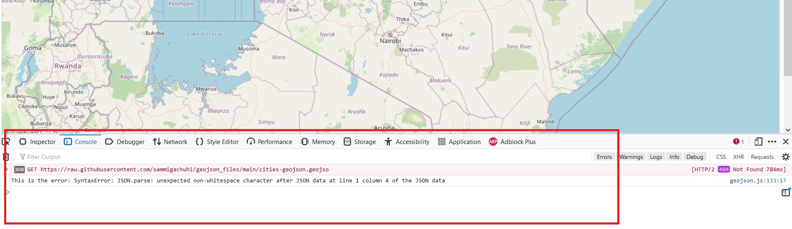
Restore the omitted letter and reload your map.html. Your leaflet map should have the city markers overlain just like in the case of using Ajax plugin or hardcoding the Geojson data into var cities. To stretch your Javascript skills further, we can shorten our code further by retaining the arguments response, data and error and using the arrow function => to pass on the return statements, like so.
fetch("https://raw.githubusercontent.com/sammigachuhi/geojson_files/main/cities-geojson.geojson")
.then((response) =>{
return response.json()
})
.then((data) => {
L.geoJson(data).addTo(map);
})
.catch((error) => {
console.log(`This is the error: ${error}`)
})It looks cryptic but don’t cry! We have only ommitted the function() keyword and instead added => between function() and the curly brackets {<code-to-run>} which is the function body, aka where the magic happens. Just like when using Ajax, we can also add other functionalities within L.geoJSON. In here, and thanks to the use of template literals (``), we can even add statements and refer to our GeoJson keys (and in some cases, even variables) using ${}. Whatever is within the ${} is executed and passed out as a string to the template literals.
fetch("https://raw.githubusercontent.com/sammigachuhi/geojson_files/main/cities-geojson.geojson")
.then((response) =>{
return response.json()
})
.then((data) => {
L.geoJson(data).bindPopup((layer) => {
return `City: ${layer.feature.properties.City},<br>
Population: ${layer.feature.properties.Population}`}).addTo(map);
})
.catch((error) => {
console.log(`This is the error: ${error}`)
})
In our case, we added the HTML tag <br> to separate the City and Population keys from our GeoJSON. What we have are neat markers showing both the city name and population figures in two separate lines.
Phew! Enough Javascript for a day!
knitr::include_graphics(rep("D:/gachuhi/my-leaflet/images/city-population.jpg"))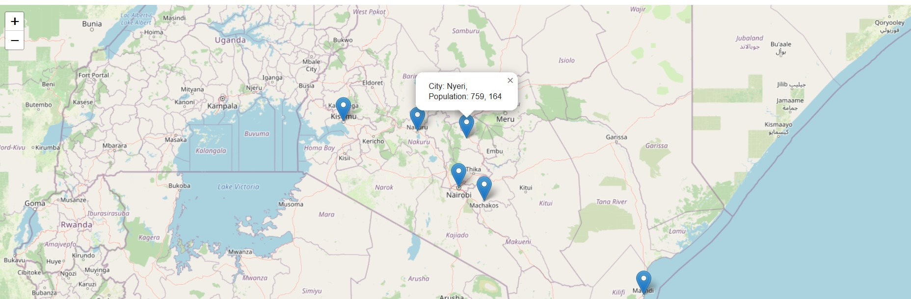
Here are the full files.